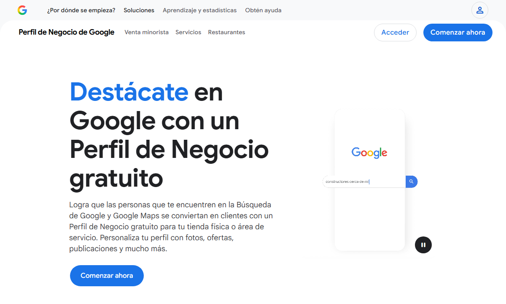
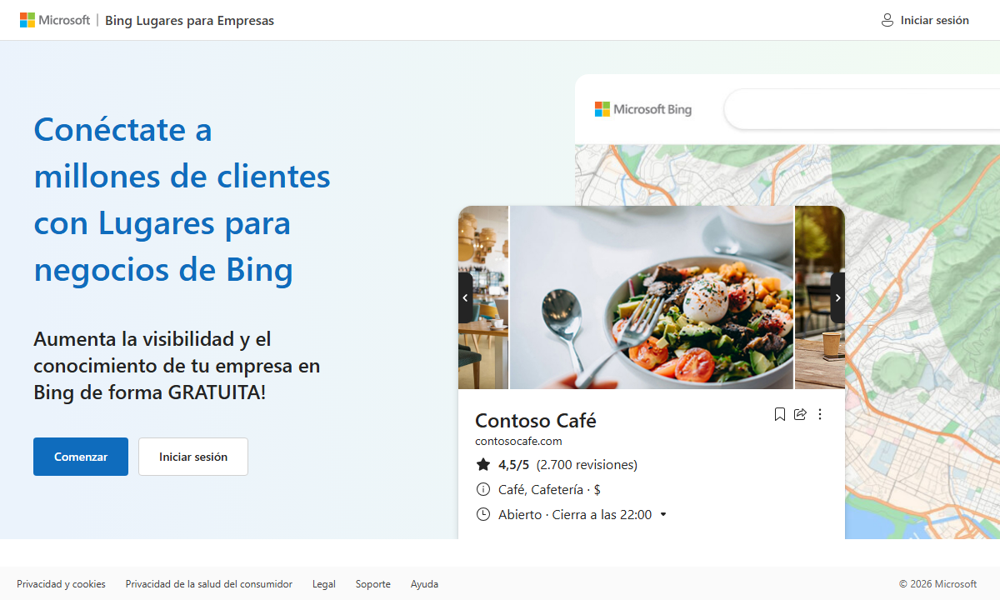

El sitio ya está construido y optimizado. Lo que falta son cuatro tareas que nadie más puede hacer por usted, porque viven dentro de sus propias cuentas de Google e Instagram. Ninguna cuesta dinero y todas juntas toman menos de treinta minutos.
Cuando alguien en Barranquilla busca "barbería cerca de mí", Google no muestra páginas web: muestra el mapa con las fichas de los negocios. Usted ya tiene dos fichas creadas, y esa es su mayor ventaja. El problema es que hoy esas fichas no dicen que su sitio web existe, entonces Google no conecta que la ficha y la página son el mismo negocio. Conectarlas es lo que le da fuerza a las dos.

Entre a business.google.com y toque Acceder. Use la cuenta de Google con la que creó las fichas de la barbería.
Elija la sede Parque Venezuela y abra Editar perfil.
Busque el campo Sitio web y escriba exactamente:
Busque el campo de citas o reservas (aparece como "Enlace para reservar" o "Pedir cita") y escriba:
Guarde y repita exactamente lo mismo con la sede Plaza de la Paz. Las dos fichas deben quedar apuntando al mismo sitio.
Al llenar el enlace de citas, Google agrega un botón de reserva directamente en su ficha del mapa. El cliente puede agendar sin entrar al sitio, desde el resultado de búsqueda. Es la diferencia entre que lo llamen y que reserven solos.
Bing es el buscador que alimenta a ChatGPT y a Copilot. Cuando una persona le pregunta a ChatGPT "cuál es una buena barbería en Barranquilla", la respuesta sale de ahí. Hoy su negocio no existe en ese índice, así que la IA nunca lo va a mencionar. Lo bueno es que Bing permite importar todo desde Google, sin volver a escribir nada.

Entre a bingplaces.com y toque Comenzar.
Elija la opción de importar desde Google Business Profile. Bing le va a pedir permiso para leer sus fichas.
Autorice con la misma cuenta de Google del paso 1. Sus dos sedes se copian solas con dirección, teléfono, horario y fotos.
Revise que el sitio web quedó como barbasybigotes.com y confirme.
Bing puede pedirle verificar el negocio por teléfono o correo postal, igual que hizo Google en su momento. Si le pide un código, es normal. Si el trámite se complica, avísenos y lo acompañamos.
Google y las inteligencias artificiales confirman que un negocio es real cuando encuentran los mismos datos repetidos en varios lugares: la ficha del mapa, el sitio web y las redes. Su Instagram tiene seguidores y contenido, pero no enlaza al sitio, así que ese voto de confianza se pierde.
Abra Instagram con la cuenta @barbasybigotes.baq y entre a Editar perfil.
En el campo Sitio web escriba:
En la descripción del perfil, agregue la frase "Reservá tu turno online" para que quede claro qué hay del otro lado del enlace.
Parque Venezuela tiene 5.0 estrellas, que es excelente. Plaza de la Paz está en 3.7, y esa nota le resta posiciones en el mapa frente a la competencia. La única forma de subirla es con reseñas nuevas de clientes contentos.
Cuando el barbero cobra en la aplicación, le aparece un botón que dice "Abrir reseña de Google". Ese botón lleva directo al formulario de la sede donde se atendió, sin buscar nada. El cliente todavía está en la silla, contento y con el celular a mano: ese es el momento.
| Cuándo | Qué esperar |
|---|---|
| Inmediato | El botón de reservar aparece en sus fichas del mapa. Los clientes pueden agendar desde ahí. |
| De 1 a 2 semanas | El sitio empieza a salir cuando alguien busca el nombre exacto "Barbas y Bigotes Barranquilla". |
| De 1 a 3 meses | Con reseñas nuevas y publicaciones en la ficha, empieza a competir por búsquedas como "barbería en Barranquilla". |
Google tarda semanas en confiar en un sitio nuevo, y eso no se acelera con dinero ni con trucos. Lo que sí acelera todo es lo de esta guía: las fichas del mapa ya tienen años de historia y reseñas, así que conectarlas al sitio le transfiere esa confianza. Por eso la tarea número 1 vale más que cualquier otra cosa.
| Hecho | Tarea | Dónde |
|---|---|---|
| ☐ | Sitio web y enlace de reservas en la ficha de Parque Venezuela | business.google.com |
| ☐ | Sitio web y enlace de reservas en la ficha de Plaza de la Paz | business.google.com |
| ☐ | Negocio importado a Bing Places | bingplaces.com |
| ☐ | Enlace del sitio en la biografía de Instagram | @barbasybigotes.baq |
| ☐ | El equipo usa el botón de reseña en cada cobro | App del barbero |
Cualquiera de estos pasos lo podemos acompañar en una llamada corta. Escríbanos a four4gsolutions@gmail.com y lo resolvemos juntos. Lo técnico del sitio (velocidad, estructura, datos para buscadores e inteligencia artificial) ya quedó hecho de nuestro lado y no requiere mantenimiento suyo.